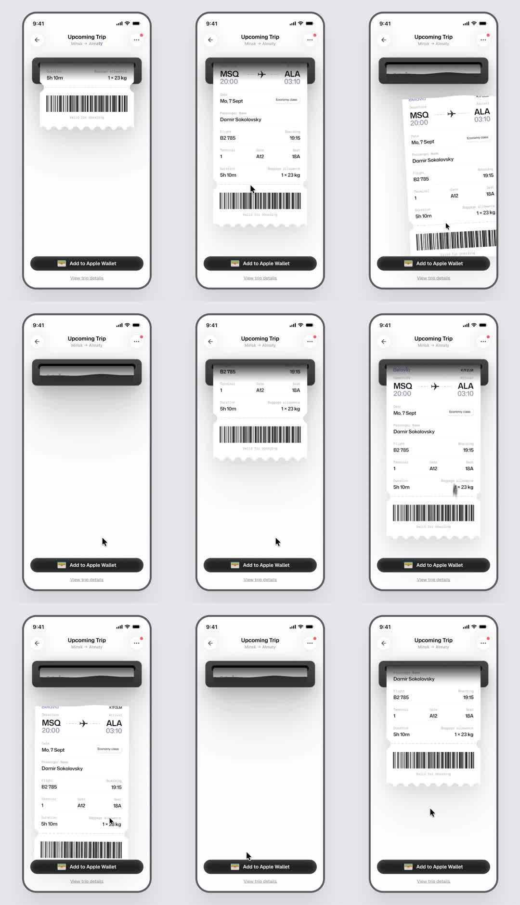

A boarding pass 'prints' out of a slot at the top of a phone screen like a thermal printer - ticket feeds down into view, sways gently, then retracts; infinite loop.
Media
Frame-by-frame

0-10%
'Upcoming Trip' screen; dark printer slot near top; only the barcode stub of the pass peeking out.
10-30%
Pass feeds downward: route header, date, passenger, gate/seat rows reveal top-to-bottom like paper from a printer; soft shadow grows under the leading edge.
30-50%
Pass fully printed, hanging from slot: pendulum sway (+-1.5deg) and micro settle bounce; perforated bottom edge + barcode visible.
50-65%
Retract: pass slides back up into the slot; shadow shrinks.
65-85%
Slot nearly empty; brief pause.
85-100%
Next print cycle starts; loop.
Build prompt
Rebuild this interaction 1:1: a boarding pass that "prints" out of a dark slot at the top of a phone screen like a thermal printer - the ticket feeds down into view, sways gently while hanging, then retracts. Infinite loop.
## Integration
Integration: stack-agnostic spec - springs given as stiffness/damping, timed motions as duration + curve, canvas/shader notes are perf guidance only; map every value to your framework and animation library of choice.
## Scene
"Upcoming Trip" phone screen. Near the top: a dark horizontal printer slot bar. The pass: white card with route header, date, passenger, gate/seat rows, perforated bottom edge and barcode. A soft drop shadow under the pass's leading edge.
## Motion spec
Pattern: autoplay loop with four beats.
- Feed (~1.6s, cubic-bezier(0.65, 0, 0.35, 1)): the pass emerges top-first from the slot - only the barcode stub peeks out at rest; content reveals top-to-bottom as paper would. Shadow grows (opacity and scale) under the leading edge.
- Hold (~1.2s): fully printed, hanging from the slot. Pendulum sway +/-1.5deg on a 2.5s sine, with a micro settle bounce as the feed stops.
- Retract (~1s, ease-in): pass slides back up into the slot; shadow shrinks.
- Pause 600ms with the slot nearly empty, then the next print cycle begins.
## Calibration
- Feed easing (0.65, 0, 0.35, 1) gives the mechanical, motor-driven feel - a soft ease-out reads as a UI slide, not printing.
- Sway amplitude +/-1.5deg max; this is paper on air, not a swing.
- Retract is faster than feed (1s vs 1.6s).
## Reduced motion
Feed and retract as opacity+short-translate tweens (300ms); no pendulum sway.
## Don't miss
- The pass is clipped by the slot window the whole time - it must look fed, not dropped in.
- The shadow is tied to the leading edge and grows during the feed; it sells the physicality.
- The perforated bottom edge and barcode are visible during the hold - they are the realism cue.
Mechanics
trigger
autoplay loop
elements
printer slot bar, pass card inside overflow-hidden window, soft drop shadow